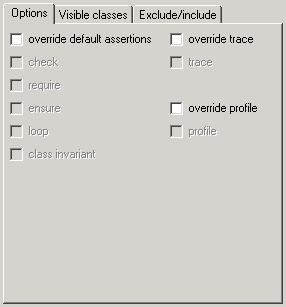
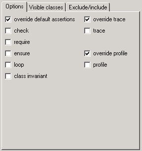
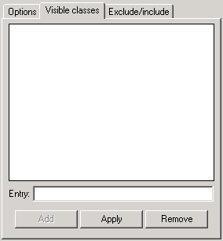
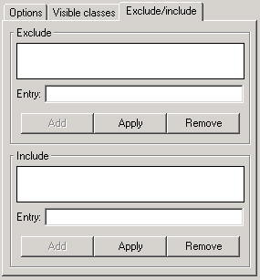

This is where you specify the directories where to look for classes when compiling your system. A cluster has a name and a path associated with it. Each cluster name in the system must be unique and only one cluster can reference a path, i.e. two clusters with different names cannot refer to the same path.
Here is how the clusters tab looks like for the calculator example:
In this tab, you will have on the left hand side of the window a tree representation of the clusters list. The tree representation enables you to see a cluster being a child of an existing one. On the right hand side you can specify the cluster properties.
The name of the cluster is what you will see displayed in the Cluster Tree. The path name will be used by the compiler to find the classes it needs to complete the compilation of your system.
You can also specify if the cluster is an override one. There can be only one override cluster. Each time you select one to be the override cluster, the previous override cluster if any will loose this property.
To make it easy for finding classes you can specify either the `library' or `all' option. They will both produce the same effect when looking for classes, i.e. the compiler will look at all Eiffel classes located in the specified directory and its subdirectories. The difference between this two options is that when you select `library', the classes will not be editable from the EiffelStudio environment.
The idea is that you should use `library' when reusing a library made by someone else on which you don't have control over. For example, EiffelBase is a such a library. You should use `all' for your own libraries.
This is where you can override some options that have been set for your system in either the General tab or the Debug Tab.

You can choose to specify for the current selected cluster:
If you choose to override all options, here is how it will look like:

When you need to compile a project that will be used for a CECIL or an EiffelCOM application you need to mark some classes visible. You can do it using the visible classes tab:

To add a class, simply enter its name and click on Add. This will only work for classes that are in the selected cluster. If you put an invalid class name an error will be raised during the compilation of your system.
If you made an error simply select the class from the list, modify it in the `Entry' field and then click on Apply. The correct name will now appear in the list.
To remove a class from the list, simply select it and click on Remove.

The exclude part is to exclude certain directories or file names during the class lookup performed by the compiler. For example, if you are using CVS as a source control, you will notice that a CVS directory is created in each of your directory. So adding CVS in the exclude will speed-up the compiler since it won't have to look inside the CVS directory.
The include part is useful when you have some Eiffel classes that does not follow the standard Eiffel file name pattern, i.e. "class_name.e". To make sure the compile will find those classes, you have to include the file name of the every Eiffel classes that do not follow the standard naming pattern for Eiffel file name.